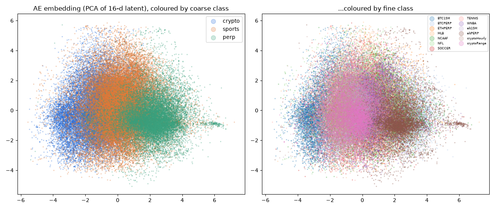
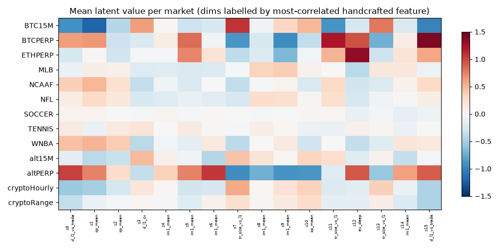
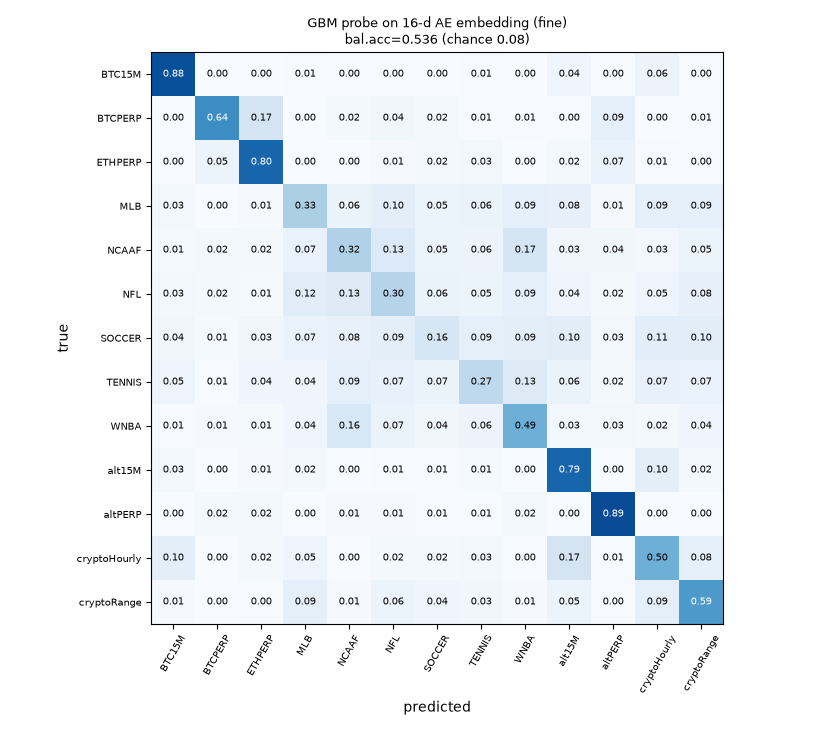
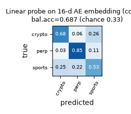
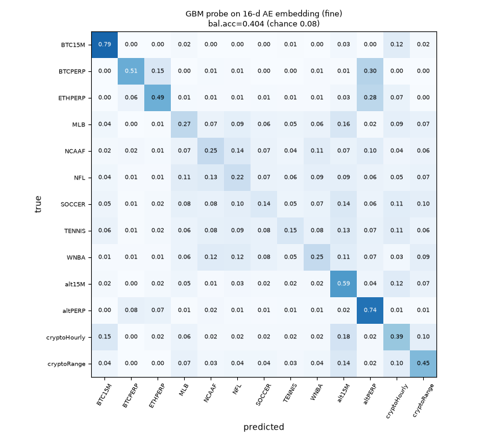
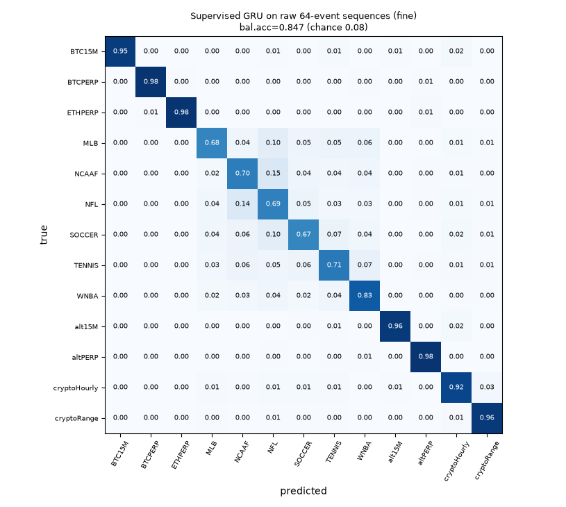

Autoencoder embedding
An unsupervised 16-number summary of the last 64 book events, and how much market identity it carries.
What we found
- An embedding learned without labels already separates the families. A 16-number summary of the last 64 events (reconstruction MSE 0.49 vs 1.29 for predicting the mean) lets a GBM probe recover crypto / sports / perp with 0.83 balanced accuracy (linear probe 0.78; chance 0.33).
- It keeps much less of the fine-grained identity. 13-class accuracy from the embedding is 0.54 (linear 0.45; chance 0.08), while a supervised GRU on the same 64-event input reaches 0.85. The autoencoder spends its capacity on what varies most event to event (spread, imbalance, where the next order lands), not on what distinguishes leagues.
- Per market: BTC 15m (88% recall), alt perps (89%), ETH perp (80%) and alt 15m (79%) stay distinct in the embedding. The sports leagues mostly collapse into one cloud (16–49% recall, confused with one another), so at the 64-event scale sports books look alike.
- What the dimensions mean (by correlation with the handcrafted features): z1 and z0 are spread and one-tick-ness against touch depth relative to trade size; z8 and z14 are L1 imbalance; z12 is deep vs at-touch activity; z11 and z15 are order size relative to touch depth. BTC 15m sits at the tight-spread, deep-touch-relative-to-trades end (z1 −1.2, z15 −1.0); perps at the opposite end with most activity away from the touch (z12 +1.0, z15 +1.4).
- Strict autoencoder (distance-from-touch, spread and mid-change fields blanked, so no tick-size information): probes still recover family at 0.77 (GBM) / 0.69 (linear) and the 13 markets at 0.40 / 0.27 (chance 0.33 / 0.08). Removing tick information costs about 0.07 coarse and 0.13 fine, so most, but not all, of the embedding's signal is behavioural.
| model | balanced accuracy | chance |
|---|---|---|
| ae_linear_probe_coarse | 0.781 | 0.333 |
| ae_gbm_probe_coarse | 0.834 | 0.333 |
| ae_linear_probe_fine | 0.449 | 0.077 |
| ae_gbm_probe_fine | 0.536 | 0.077 |
| seq_gru_classifier_fine | 0.847 | 0.077 |
| ae_linear_probe_coarse (strict: tick fields removed) | 0.687 | 0.333 |
| ae_gbm_probe_coarse (strict: tick fields removed) | 0.766 | 0.333 |
| ae_linear_probe_fine (strict: tick fields removed) | 0.271 | 0.077 |
| ae_gbm_probe_fine (strict: tick fields removed) | 0.404 | 0.077 |






What the latent dimensions encode
| dim | top correlates |
|---|---|
| z0 | d_l1_vs_trade (-0.46), sp_mean (+0.46), tr_size_cv (-0.41) |
| z1 | sp_mean (+0.53), sp_one (-0.49), d_l1_vs_trade (-0.47) |
| z2 | sp_mean (+0.28), d_l1_cv (+0.21), sp_one (-0.20) |
| z3 | d_l1_cv (-0.42), im1_std (-0.41), sp_mean (-0.39) |
| z4 | im1_mean (+0.36), im1_abs (-0.29), im5_mean (+0.18) |
| z5 | im1_mean (-0.52), ev_deep (+0.44), ev_touch (-0.39) |
| z6 | im1_mean (+0.41), d_gap1 (+0.35), sp_mean (+0.35) |
| z7 | tr_size_vs_l1 (-0.46), sp_mean (-0.41), sp_one (+0.39) |
| z8 | im1_mean (-0.79), im5_mean (-0.37), sp_mean (-0.24) |
| z9 | im1_mean (-0.45), ev_deep (-0.40), tv_reltick (+0.39) |
| z10 | sp_mean (-0.37), tv_reltick (+0.26), d_gap1 (-0.26) |
| z11 | tr_size_vs_l1 (+0.54), d_l1_vs_trade (-0.45), tv_logdepth (-0.38) |
| z12 | ev_deep (+0.66), ev_touch (-0.55), tv_reltick (-0.48) |
| z13 | tr_size_vs_l1 (-0.38), d_l1_vs_trade (+0.35), im1_mean (-0.33) |
| z14 | im1_mean (-0.62), ev_bidshare (+0.29), sp_mean (+0.26) |
| z15 | d_l1_vs_trade (-0.59), tv_reltick (-0.47), tr_size_vs_l1 (+0.39) |
Method
Each sample is the last 64 events before an anchor. Every event is a 16-number token: event type, side, add or cancel, distance from the touch in ticks, size relative to the sequence's own mean touch depth, log inter-arrival time standardised within the sequence, spread, L1 imbalance, mid change, and depth shares. No absolute size or activity level survives this normalisation. The autoencoder is a 2-layer GRU encoder → 16-d bottleneck → GRU decoder that reconstructs the whole sequence (MSE). It is trained without labels on a class-balanced sample. Probes (logistic regression and GBM) then try to read the market type from the 16 numbers. The strict variant zeroes the three tick-denominated token fields.